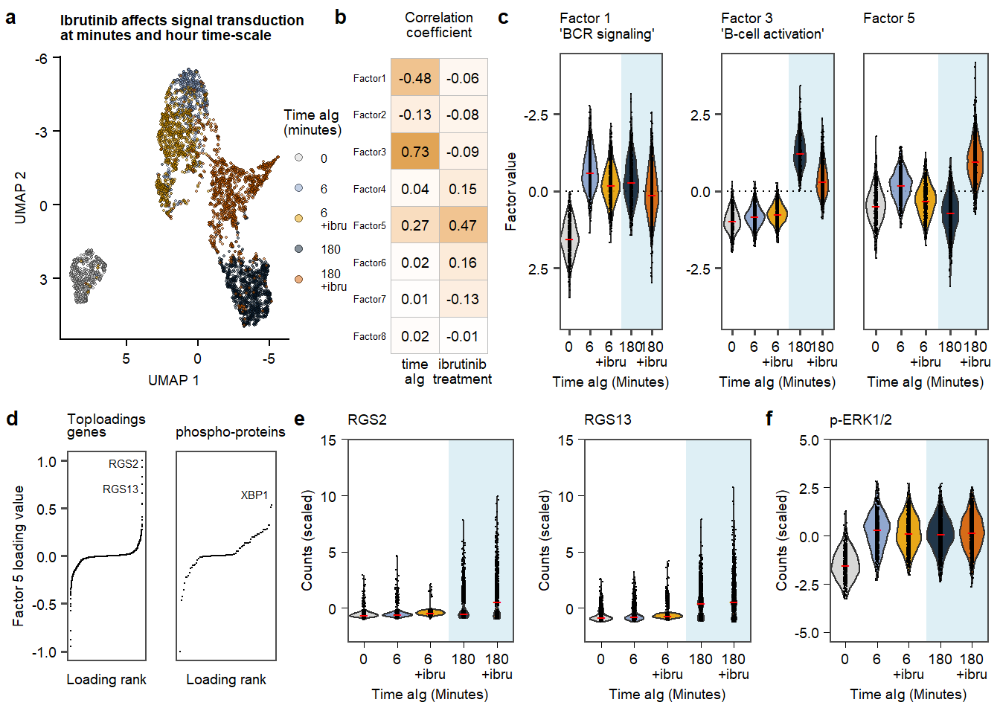

Main
## UMAP
plot.umap.data <- plot_dimred(mofa, method="UMAP", color_by = "condition",stroke = 0.001, dot_size =1, alpha = 0.2, return_data = T)
plot.umap.all <- ggplot(plot.umap.data, aes(x=x, y = y, fill = color_by))+
geom_point(size = 0.7, alpha = 0.5, shape = 21, stroke = 0) +
theme_half_open() +
scale_fill_manual(values = colorsibru, labels = c(labels.withibru), name = "Time aIg \n(minutes)")+
theme(legend.position="none")+
add.textsize +
scale_x_reverse()+
scale_y_reverse()+
labs(title = "Ibrutinib affects signal transduction \nat minutes and hour timescale", x = "UMAP 1", y = "UMAP 2")
## UMAP legend
legend.umap <- get_legend( ggplot(plot.umap.data, aes(x=x, y = y, fill = color_by))+
geom_point(size = 2, alpha = 0.5, shape = 21, stroke = 0) +
theme_half_open() +
scale_fill_manual(values = colorsibru, labels = c(labels.withibru), name ="Time aIg \n(minutes)",)+
theme(legend.position="right")+
add.textsize +
scale_x_reverse()+
scale_y_reverse()+
labs(title = "Ibrutinib affects signal transduction at \nminute and hour timepoints after aIG stimulation", x = "UMAP 1", y = "UMAP 2"))
legend.umap <- as_ggplot(legend.umap)
## correlation time and factors
plot.correlation.covariates.withibru <- correlate_factors_with_covariates(mofa,
covariates = c("time", "inhibitor"),
factors = 8:1,
plot = "r"
)plot.correlation.covariates.withibru <- ggcorrplot(plot.correlation.covariates.withibru, tl.col = "black", method = "square", lab = TRUE, ggtheme = theme_void, colors = c("orange3", "white", "orange3"), lab_size = 2.5) +
add.textsize +
labs(title = "Correlation\ncoefficient\n", y = "") +
scale_y_discrete(labels = c("time\naIg\n","ibrutinib\ntreatment\n")) +
coord_flip() +
theme(axis.text.x=element_text(angle =0,hjust = 0.5),
axis.text.y=element_text(size = 5),
legend.position="none",
plot.title = element_text(hjust = 0.5))
## functions violin prots
f.violin <- function(data, feature){
ggplot(subset(data) , aes(x = as.factor(condition), y =get(noquote(feature)))) +
annotate("rect",
xmin = 4 - 0.45,
xmax = 5 + 0.5,
ymin = -5.5, ymax =5, fill = "lightblue",
alpha = .4
)+
geom_violin(alpha = 0.9,aes(fill = condition))+
geom_jitter(width = 0.05,size = 0.1, color = "black")+
stat_summary(fun=median, geom="point", shape=95, size=2, inherit.aes = T, position = position_dodge(width = 0.9), color = "red")+
theme_few()+
labs(title = paste0(feature)) +
scale_x_discrete(labels = labels.withibru, expand = c(0.1,0.1), name = "Time aIg (minutes)") +
scale_y_continuous(expand = c(0,0), name = "Counts (scaled)") +
scale_color_manual(values = colorsibru, labels = c(labels.withibru), name = "Time aIg (minutes)",)+
scale_fill_manual(values = colorsibru, labels = c(labels.withibru), name = "Time aIg (minutes)",) +
add.textsize +
theme(axis.ticks=element_line(color="black", size = 0.2),
legend.position="none")
}
## functions violin RNA
f.violin.rectlarge <- function(data, feature){
ggplot(subset(data) , aes(x = as.factor(condition), y =get(noquote(feature)))) +
annotate("rect",
xmin = 4 - 0.45,
xmax = 5 + 0.5,
ymin = -3, ymax = 15, fill = "lightblue",
alpha = .4
)+
geom_violin(alpha = 0.9,aes(fill = condition))+
geom_jitter(width = 0.05,size = 0.1, color = "black")+
stat_summary(fun=median, geom="point", shape=95, size=2, inherit.aes = T, position = position_dodge(width = 0.9), color = "red")+
theme_few()+
labs(title = paste0(feature)) +
scale_x_discrete(labels = labels.withibru, expand = c(0.1,0.1), name = "Time aIg (minutes)") +
scale_y_continuous(expand = c(0,0), name = "Counts (scaled)") +
scale_color_manual(values = colorsibru, labels = c(labels.withibru), name = "Time aIg (minutes)",)+
scale_fill_manual(values = colorsibru, labels = c(labels.withibru), name = "Time aIg (minutes)",) +
add.textsize +
theme(axis.ticks=element_line(color="black", size = 0.2),
legend.position="none")
}
## functions violin factors
f.violin.fact <- function(data = proteindata.subset, protein){
ggplot(subset(data) , aes(x = as.factor(condition), y =get(noquote(protein)))) +
annotate("rect",
xmin = 4 - 0.5,
xmax = 5 + 0.5,
ymin = -4.5, ymax = 4.5, fill = "lightblue",
alpha = .4
)+
geom_hline(yintercept=0, linetype='dotted', col = 'black')+
geom_violin(alpha = 0.9,aes(fill = condition))+
geom_jitter(width = 0.05,size = 0.1, color = "black")+
stat_summary(fun=median, geom="point", shape=95, size=2, inherit.aes = T, position = position_dodge(width = 0.9), color = "red")+
theme_few()+
ylab(paste0(protein)) +
scale_x_discrete(labels = labels.withibru, expand = c(0.1,0.1), name = "Time aIg (minutes)") +
scale_y_continuous(expand = c(0,0), name = strsplit(protein, split = "\\.")[[1]][2]) +
scale_color_manual(values = colorsibru, labels = c(labels.withibru), name = "Time aIg (minutes)",)+
scale_fill_manual(values = colorsibru, labels = c(labels.withibru), name = "Time aIg (minutes)",) +
add.textsize +
theme(legend.position="none")
}
## Factor data for violins
MOFAfactors<- as.data.frame(mofa@expectations$Z) %>%
mutate(sample = rownames(as.data.frame(mofa@expectations$Z)[,1:mofa@dimensions$K]))
MOFAfactors <- left_join(as.data.frame(MOFAfactors), meta.allcells.withibru)
factors_toplot <- c(colnames(MOFAfactors)[c(1:mofa@dimensions$K)])
## plot violin factors
for(i in factors_toplot) {
assign(paste0("plot.violin.factor.", i), f.violin.fact(data = MOFAfactors,protein = i))
}
plot.violin.factor1 <- plot.violin.factor.group1.Factor1 +
theme(#axis.title.x=element_blank(),
#axis.text.x=element_blank(),
#axis.ticks.x=element_blank(),
legend.position="none") +
scale_y_reverse(expand = c(0,0), name = "Factor value")+
labs(title = "Factor 1 \n'BCR signaling'")
plot.violin.factor3 <- plot.violin.factor.group1.Factor3 +
theme(axis.title.y=element_blank(),
#axis.text.y=element_blank(),
#axis.ticks.y=element_blank(),
legend.position="none") +
scale_y_continuous(expand = c(0,0), name = "Factor 3 value")+
labs(title = "Factor 3 \n'B-cell activation'")
plot.violin.factor5 <- plot.violin.factor.group1.Factor5 +
theme(axis.title.y=element_blank(),
axis.text.y=element_blank(),
axis.ticks.y=element_blank(),
legend.position="none") +
scale_y_continuous(expand = c(0,0), name = "Factor 5 value")+
labs(title = "Factor 5 \n")
## Protein data for violins
proteindata <- as.data.frame(t(seu_combined_selectsamples.withibru@assays$PROT@scale.data)) %>%
mutate(sample = rownames(t(seu_combined_selectsamples.withibru@assays$PROT@scale.data))) %>%
left_join(meta.allcells.withibru, by = "sample")
proteinstoplot <- c("p-Erk1/2", "p-PLC-y2Y759", "p-BLNK", "p-CD79a", "p-Syk", "p-JAK1")
for(i in proteinstoplot) {
assign(paste0("plot.violin.prot.", i), f.violin(data = proteindata, feature = i))
}
`plot.violin.prot.p-Erk1/2` <- `plot.violin.prot.p-Erk1/2` +
labs(title = "p-ERK 1/2")
`plot.violin.prot.p-Syk` <- `plot.violin.prot.p-Syk` +
labs(title = "p-SYK")
## Data for violin genes
rnadata <- as.data.frame(t(seu_combined_selectsamples.withibru@assays$SCT.RNA@scale.data)) %>%
mutate(sample = rownames(t(seu_combined_selectsamples.withibru@assays$SCT.RNA@scale.data))) %>%
left_join(meta.allcells.withibru, by = "sample")
for(i in c("NEAT1", "NPM1", "BTF3", "RGS2", "RGS13","VEGFA")) {
assign(paste0("plot.violin.RNA.", i), f.violin.rectlarge(data = rnadata, feature = i))
}
## Enrichment analysis factor 5
weights.RNA <- get_weights(mofa, views = "RNA",as.data.frame = TRUE)
weights.RNA.filtered.f5 <- weights.RNA %>%
mutate(Entrez = mapIds(org.Hs.eg.db, as.character(weights.RNA$feature), 'ENTREZID', 'SYMBOL')) %>%
filter(abs(value) >= 0.2 & factor == "Factor5") %>%
mutate(sign = ifelse(value <= 0, "neg", "pos"))
enriched.go.bp.fct5.clusterdposneg <- compareCluster(Entrez~factor+sign, data=weights.RNA.filtered.f5, fun='enrichGO', OrgDb='org.Hs.eg.db',ont= "BP",
pAdjustMethod = "BH", readable = TRUE)
enriched.go.bp.fct5.clusterdposneg <- simplify(enriched.go.bp.fct5.clusterdposneg, cutoff=0.8, by="p.adjust", select_fun=min)
plot.enriched.go.f5.top5 <- dotplot(enriched.go.bp.fct5.clusterdposneg,x=~sign, showCategory = 5, by = "count") +
scale_y_discrete(labels = c("negative regulation of G protein-coupled\nreceptor signaling pathway") , limits = "negative regulation of G protein-coupled receptor signaling pathway") +
facet_grid(~factor) +
add.textsize+
scale_color_viridis(option="E", direction = -1) +
scale_size_continuous(range=c(0.8, 2))
## Top enriched sets
topgeneset.fct5<- unlist(str_split(subset(enriched.go.bp.fct5.clusterdposneg@compareClusterResult, sign == "pos")$geneID, pattern = "/"))
topgeneset.fct5 = bitr(topgeneset.fct5, fromType="SYMBOL", toType="ENTREZID", OrgDb="org.Hs.eg.db")
bottomgeneset.fct5<- unlist(str_split(subset(enriched.go.bp.fct5.clusterdposneg@compareClusterResult, sign == "neg")[1:5,]$geneID, pattern = "/"))
bottomgeneset.fct5 = bitr(bottomgeneset.fct5, fromType="SYMBOL", toType="ENTREZID", OrgDb="org.Hs.eg.db")
## PROT factor 5 loadings
plotdata.rank.PROT.5<-plot_weights(mofa,
view = "PROT",
factors = c(5),
nfeatures = 4,
text_size = 1,
manual = list(c("p-ERK1/2", "XBP1_PROT"),NULL),
color_manual = list("black","black"),
return_data = TRUE
)
plotdata.rank.PROT.5<- plotdata.rank.PROT.5%>%
mutate(Rank = 1:nrow(plotdata.rank.PROT.5),
Weight = value,
colorvalue = ifelse(labelling_group == 3,"black", ifelse(labelling_group == 2, "black", "grey2")),
highlights = ifelse(labelling_group >= 1, as.character(feature), "")
)%>%
mutate(highlights = case_when(as.character(highlights) == "XBP1_PROT" ~ "XBP1",
TRUE ~ highlights))
plot.rank.PROT.5<- ggplot(plotdata.rank.PROT.5, aes(x=Rank, y = Weight, label = highlights)) +
labs(title = "<p><span style='color:black'></span> (Phospho)proteins<span style='color:black'><span style='color:blue4'></span> ", #
x= "Loading rank\n",
y= "Factor 5 loading value") +
geom_point(size=0.1, color =plotdata.rank.PROT.5$colorvalue) +
geom_text_repel(size = 2,
segment.size = 0.2,
color =plotdata.rank.PROT.5$colorvalue,
nudge_x = -1 - plotdata.rank.PROT.5$Weight,
direction = "y",
hjust = 0,
segment.color = "grey50")+
theme_few()+
add.textsize +
scale_x_continuous() +
add.textsize +
theme(
plot.title = element_markdown(),
axis.text.x=element_blank(),
axis.ticks.x=element_blank(),
axis.text.y = element_blank(),
axis.title.y = element_blank(),
axis.ticks.y = element_blank()
)+
ylim(c(-1,1))
### RNA loadings
plotdata.rank.RNA.5<-plot_weights(mofa,
view = "RNA",
factors = c(5),
nfeatures = 2,
text_size = 1,
manual = list(topgeneset.fct5$SYMBOL,NULL),
color_manual = list("black","black"),
return_data = TRUE
)
plotdata.rank.RNA.5<- plotdata.rank.RNA.5%>%
mutate(Rank = 1:nrow(plotdata.rank.RNA.5),
Weight = value,
colorvalue = ifelse(labelling_group == 3,"black", ifelse(labelling_group == 2, "black", "grey2")),
highlights = ifelse(labelling_group >= 1, as.character(feature), "")
)
plot.rank.RNA.5<- ggplot(plotdata.rank.RNA.5, aes(x=Rank, y = Weight, label = highlights)) +
labs(title = "Top loadings <p><span style='color:black'></span> genes <span style='color:black'><span style='color:black'></span> ", #
x= "Loading rank\n",
y= "Factor 5 loading value") +
geom_point(size=0.1, color =plotdata.rank.RNA.5$colorvalue) +
geom_text_repel(size = 2,
segment.size = 0.2,
color =plotdata.rank.RNA.5$colorvalue,
nudge_x = -1 - plotdata.rank.RNA.5$Weight,
direction = "y",
hjust = 0,
segment.color = "grey50")+
theme_few()+
add.textsize +
scale_x_continuous() +
add.textsize +
theme(
plot.title = element_markdown()
) +
theme(axis.text.x=element_blank(),
axis.ticks.x=element_blank()
)+
ylim(c(-1,1))Fig3.row1 <- plot_grid(plot.umap.all, legend.umap, NULL, plot.correlation.covariates.withibru, plot.violin.factor1,plot.violin.factor3,plot.violin.factor5, labels = c(panellabels[1],"",panellabels[2], "", panellabels[3]), label_size = 10, ncol =7, rel_widths = c(1.2,0.1,0.1,0.55,0.72,0.68,0.61))
Fig3.row2 <- plot_grid(plot.rank.RNA.5, plot.rank.PROT.5,plot.violin.RNA.RGS2, plot.violin.RNA.RGS13, `plot.violin.prot.p-Erk1/2`, labels = c(panellabels[4], "", panellabels[5], "", panellabels[6]), label_size = 10, ncol = 5, rel_widths = c(0.8,0.66,1.2,1.2,1.2))
plot.Fig3 <- plot_grid(Fig3.row1, Fig3.row2, labels = c( "", ""), label_size = 10, ncol = 1, rel_heights =c(0.9,0.7,1))
ggsave(plot.Fig3,filename = "output/paper_figures/Fig3.pdf", width = 183, height = 122, units = "mm", dpi = 300, useDingbats = FALSE)
ggsave(plot.Fig3, filename = "output/paper_figures/Fig3.png", width = 183, height = 122, units = "mm", dpi = 300)
plot.Fig3 Figure 3. aIG stimultion in contect of Ibrutinib.